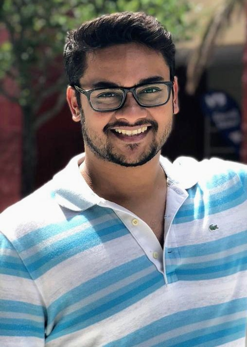

I am a third year Computer Science Ph.D. student and U-LINK Predoctoral Fellow studying at the University of Miami. I am interested in deep learning, computer vision, and robotics. Currently, I am investigating how deep learning models reinforce racial inequalities using theories and methods combining Computer Science and Sociology under the supervision of Dr. Ubbo Visser and Dr. Nick Petersen.
Prior to my time at UM, I completed my Master's in Computer Science at Indiana State University in May 2017. My final research project focused on improving the running time of the ID3 Decision Tree Learning algorithm using Gain Ratio and Random Forests under the supervision of Dr. László Egri [report][slides]. In July 2013, I received my Master of Physics (MPhys) degree in Theoreical Physics Honours from Lancaster University. My research focused on understanding the mathematical formalism of Quantum Field Theory and investigating its application in the context of cosmology [MPhys thesis][poster]. Supervisor: Dr. Anupam Mazumdar
It’s Not Just Black and White: Classifying Defendant Mugshots Based on the Multidimensionality of Race and Ethnicitywas accepted to the 17th Conference on Computer and Robot Vision![paper][poster][video][slides]
Facial Recognition, Ethical Considerations and Social Responsibilityevent. In addition, I moderated an FRT adoption case-study workshop with 100 Honors students at Miami-Dade College. [MDC Event Report] [MDC Workshop Template]
Gigabytes for GoodCenter for Computational Sciences Social Systems Informatics Lecture series. University of Miami. [Event Poster][slides]
I am thankful to those who said NO to me. It's because of them I did it myself.- Albert Einstein.